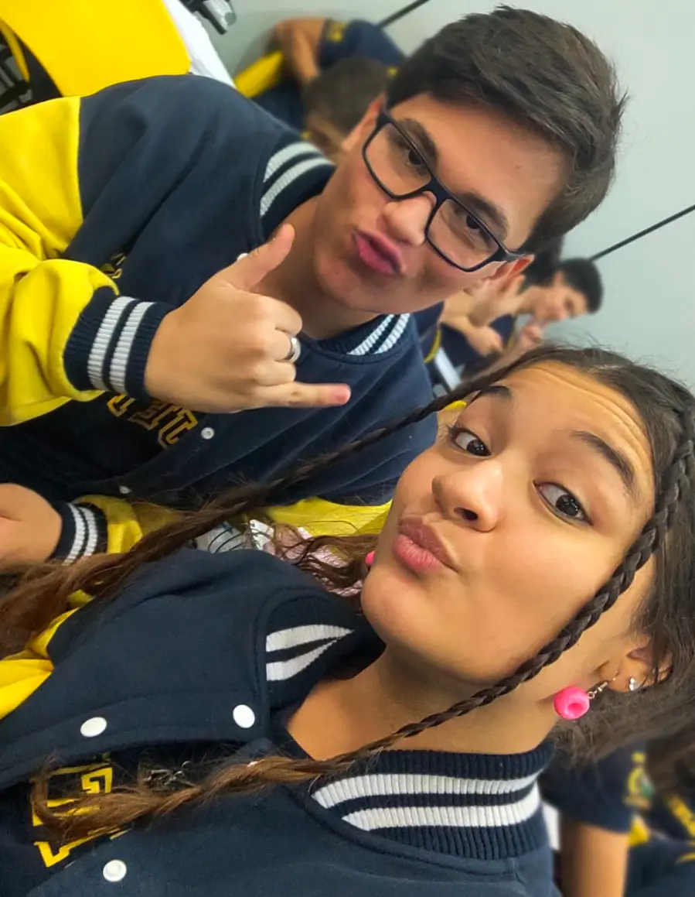
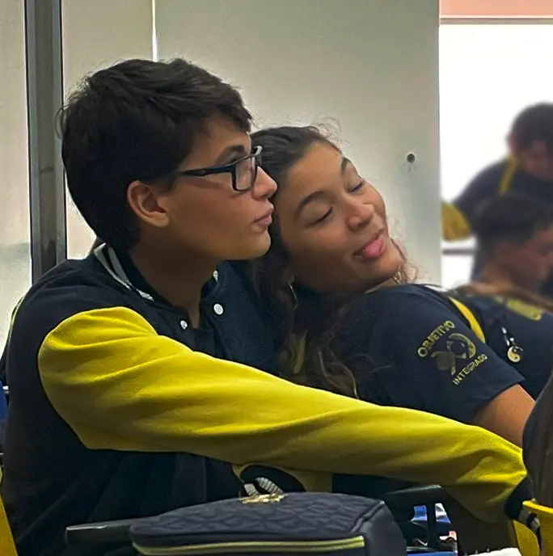
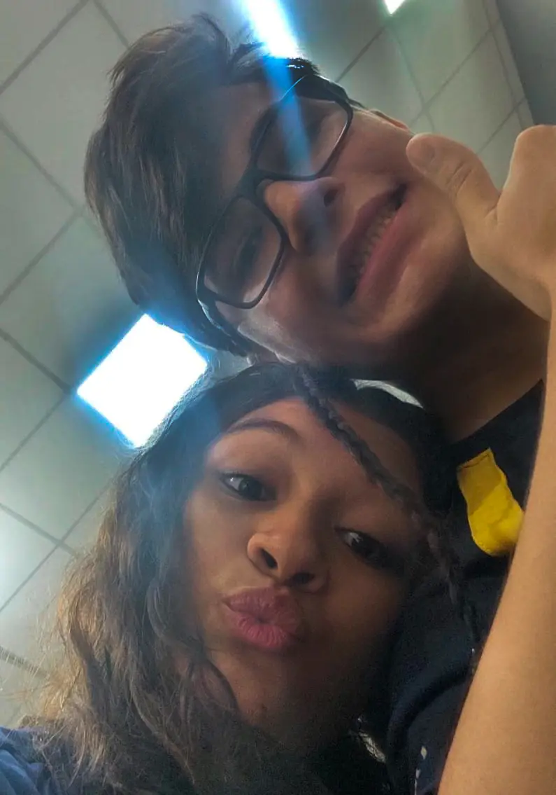
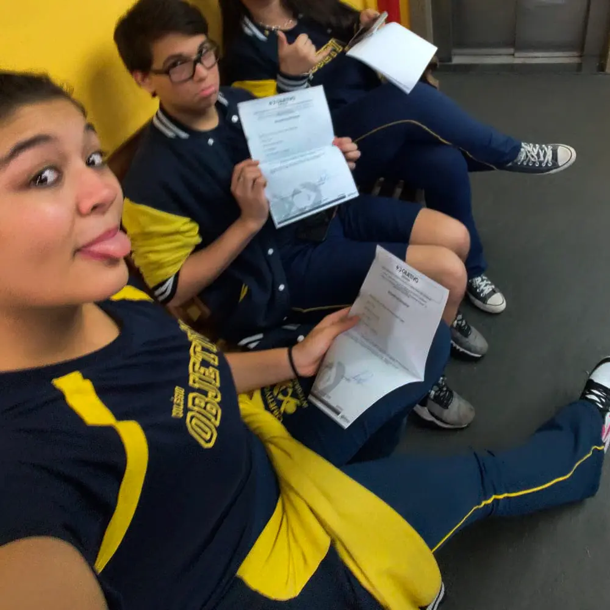
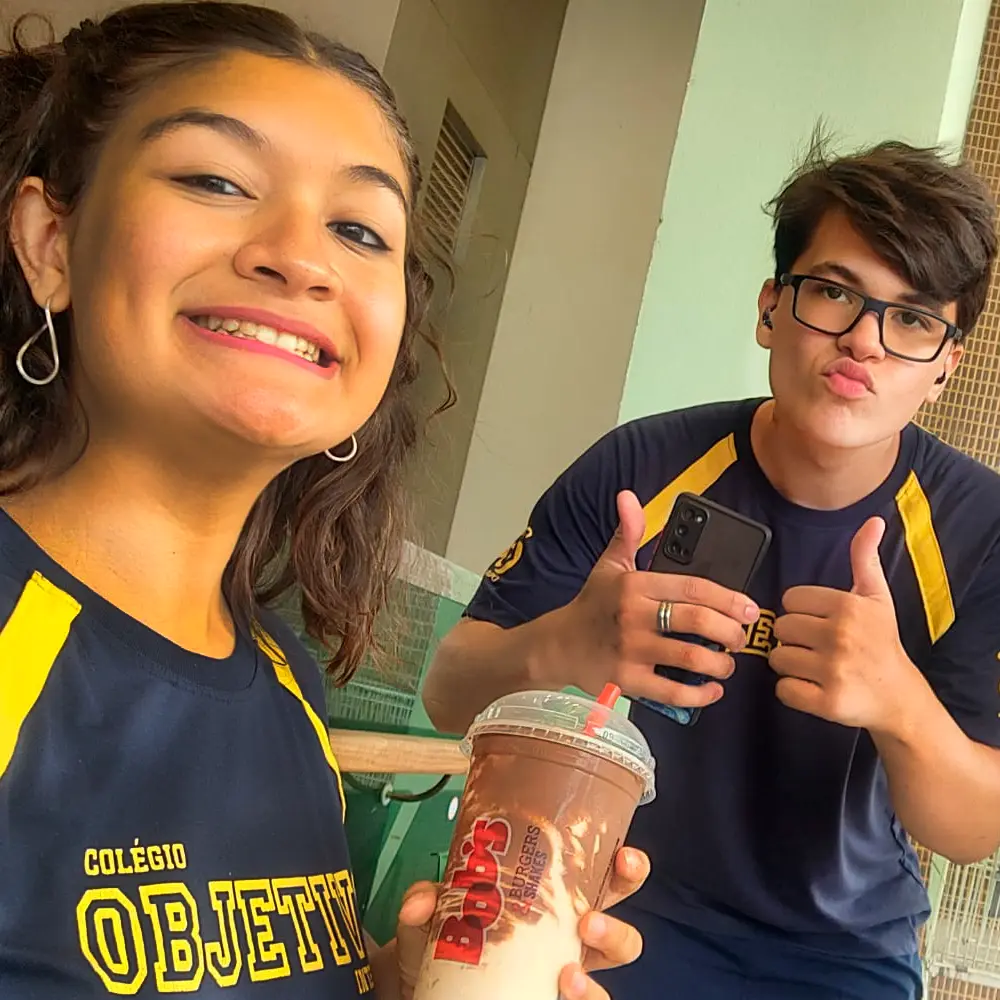
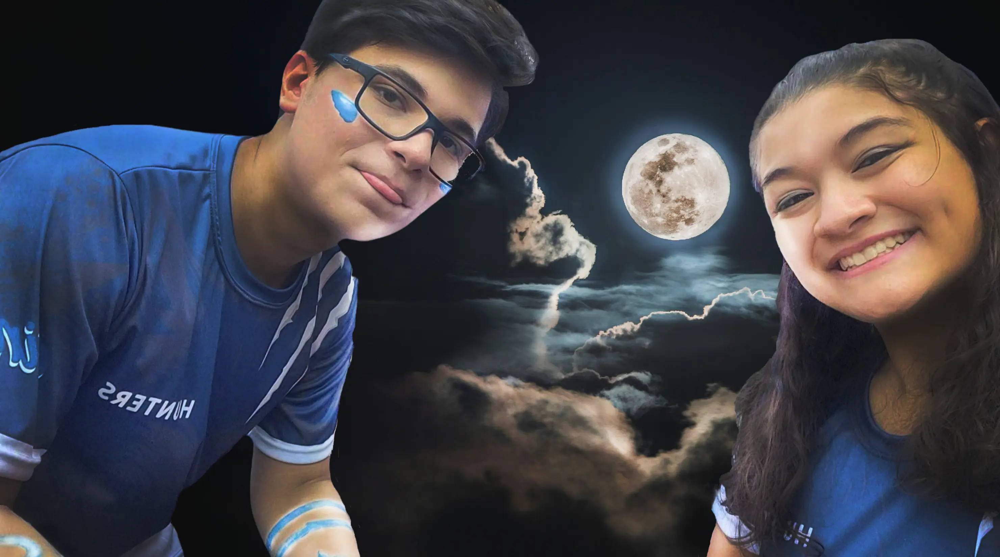

Oiii, quem diria que eu estaria escrevendo uma "cartinha"? Bom, sendo uma cartinha ou não, o que realmente importa é o que eu vou expressar aqui, não é?

Quem é a Maene?
Maene para mim é uma pessoa doce, gentil, justa, carinhosa, sincera e amiga. Aquela pessoa que ao mesmo tempo que puxa a sua orelha, nos momentos em que você pisa na bola, também é aquela em que lhe abraça nos momentos de crise... é aquela em quem você pode contar sempre que precisar.
A luz em meio à escuridão
Quando te vi pela primeira vez, pensei que fosse apenas mais uma aluna no meio de dezenas... o primeiro ano do ensino médio foi um período sombrio...
Nossa amizade começou de forma tímida, logo depois de um mapeamento aleatório do nosso queridíssimo coordenador, mal sabia ele que o mapeamento apenas contribuiu para a formação de uma duplinha caótica.

A duplinha
Os primeiros dias foram estranhos, já que estavamos muito revoltados de termos sido tirados da zona de conforto. Mas nada nos impediu de lentamente criamos intimidade para mantermos uma conversa ou outra. Quem diria que um simples:
"O que ta escrito ali?" ou "Você tem resumo de física?" e até "Você entendeu alguma coisa que o Hercos disse?"
nos aproximaria tanto em tão pouco tempo?

Evolução
Bota pouco tempo nisso, viu? Tenho certeza que em menos de um mês já estavamos falando mal de metade da sala (se bem que não era muito difícil, né?). Brincadeiras à parte, você me mudou, Maene, me fez ver o mundo de uma forma diferennte quanto à amizade e carinho (mesmo sendo seco e frio como um iceberg).

É... aquele dia
Teve o episódio da advertência, claro... vamos pro próximo tópico? Me lembrar disso me da raiva do seu marido (compartilhado com 3 pessoas)...

Mais que uma amiga
E isso tudo nos trás para o dia de hoje, 2025... uau, quem diria que passaria tão rápido, né? Bom, o que eu quero dizer é que eu nunca pensei que uma simples colega de sala, passaria a ser minha amiga num estalar de dedos... e que hoje considero como uma irmã. Aquela em que posso me abrir, posso conversar livremente, posso compartilhar histórias, relatos... músicas depressivas da Billie Eilish(minha mãe, tira o olho, Maene).

Fim
Aqui estamos, no fim dessa pequena sessão de fotos e uma cartinha de um jeito bem inusitada de ser "declamada"?...
Espero que tenha gostado, não sou muito bom em demonstrar sentimentos (juro que não sou um iceberg), mas que tenha entendido o quão importante você é para mim, e o quão orgulhoso estou de você, Maene. Te amo, que venha mais anos de amizade pela frente, mais anos te irritando e arrancando um sorriso do seu rosto naqueles dias cinzas em que você só queria estar na sua cama... *dedada* 👈